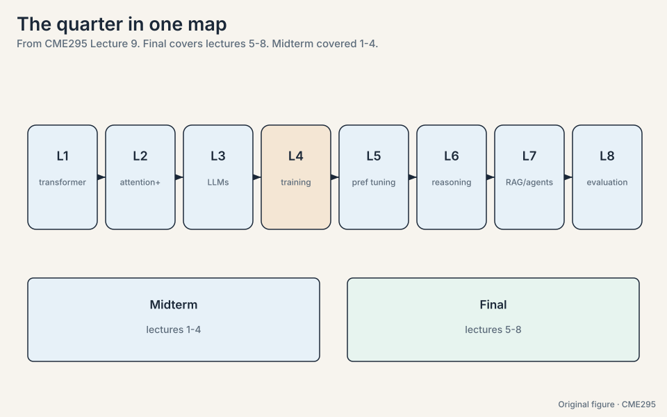
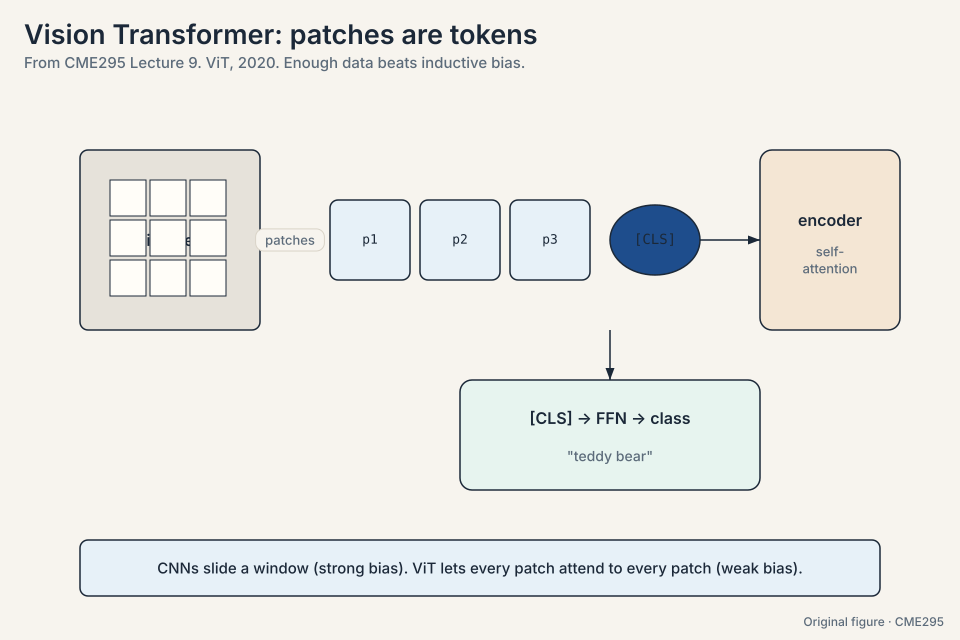
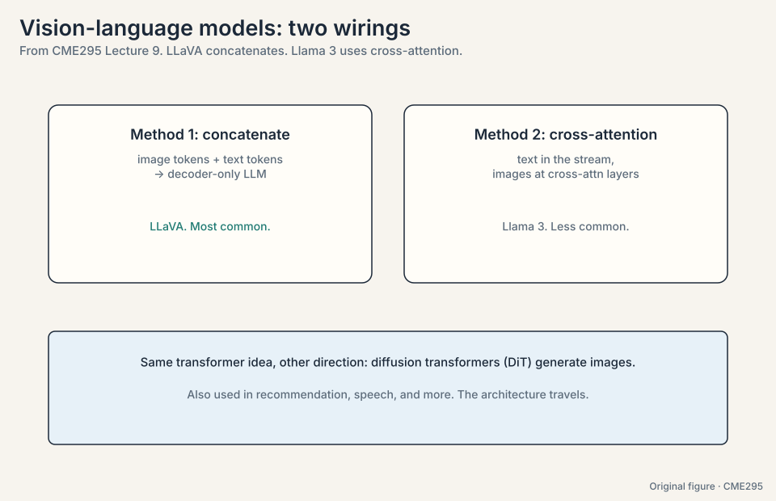
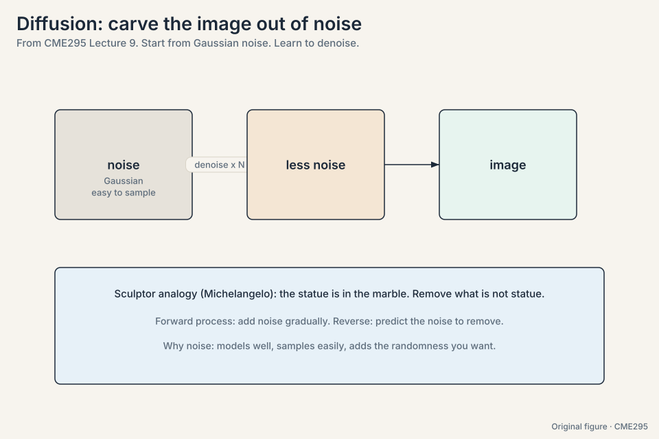
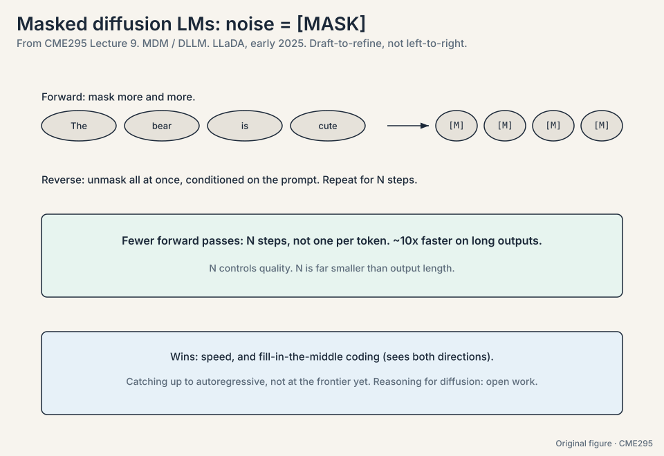
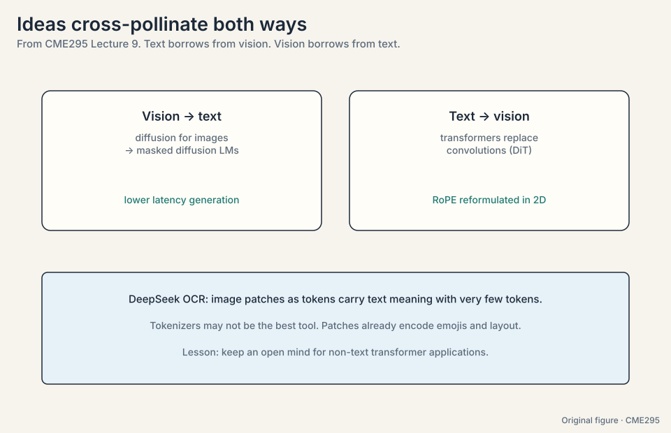
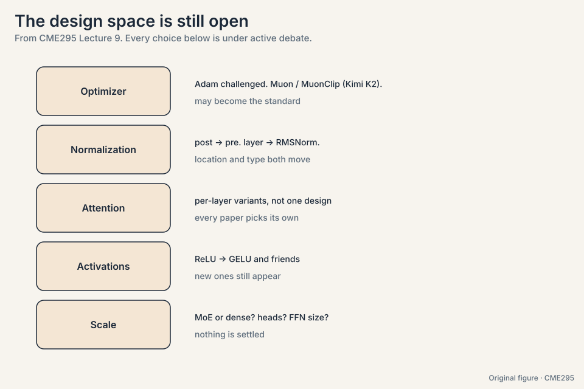
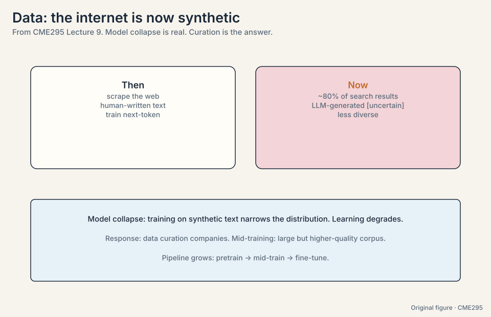
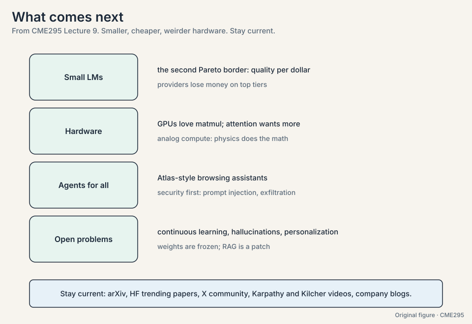

Lecture 9: Course Recap and 2025 Frontiers
Video blocked (ad-blocker or local file mode).
Watch on YouTubeVideo not loading? Watch on YouTube
Original lecture. Final-exam recap plus trending topics: ViT, diffusion LMs, and open research directions.
The quarter has a spine
Nine lectures, one spine: the training pipeline. Everything else attaches to it. Exam scope, stated in the lecture: the final covers Lectures 5 through 8. The midterm covered 1 through 4 (48:35). Walk the spine with the numbers that carry each stage.
L01: the machine. Tokens in, tokens out. The attention arrow: softmax(QK^T/sqrt(d_k))V, worked by hand in Lecture 1 (scores [1,1,2] to weights [0.21, 0.21, 0.58] to [0.79, 0.79]). The 2017 encoder-decoder for translation. Price: N x N scores, 16.7M at N = 4,096.
L02: the refinements. Positions went relative: ALiBi subtracts m * distance, RoPE rotates Q and K so the dot product keeps only distance. Norms moved before the sublayer with RMSNorm dropping the mean. Attention got cheaper (n*w, 8x fewer at n = 4,096, w = 512). GQA shared 32 KV heads down to 8: 4x smaller cache. BERT: MLM masks 15% with 80/10/10, NSP is 50/50. T5: span corruption with sentinels.
L03: the LLM. Next-token probabilities at hundreds of billions of parameters, >90% decoder-only. MoE: y-hat = sum of g_i * E_i(x), top-1/2 routing, collapse fixed with auxiliary loss. Decoding: greedy, beam (length-normalized), sampling, top-K, top-P. Temperature: exp(z_i/T). Guided decoding masks invalid tokens. Prompting: zero/few-shot, CoT, self-consistency. Inference: KV cache, paging, MLA, speculative decoding, multi-token prediction. Decoding is memory-bound: 140 GB moved per token for a 70B model.
L04: the training. Transfer learning in three stages. GPT-3: 6 * 175B * 300B = 3.15e23 FLOPs, 294 GPU-years at 34 TFLOPS. Chinchilla: 20 tokens per parameter. GPT-3 was 11.7x undertrained. Systems: data/ZeRO/tensor/pipeline. FlashAttention (~10x fewer HBM accesses, exact). Mixed precision. SFT: loss on outputs only. LoRA: W = W0 + BA at rank 4, 512x fewer params on a 4096 block. QLoRA: NF4 plus double quantization, ~16x VRAM.
L05: the taste. SFT cannot say “not this”. Bradley-Terry: P(i beats j) = sigma(r_i - r_j). PPO-clip: min(rA, clip(r, 1-eps, 1+eps)A). The toy shows r = 1.5 clipped to 1.2. Best-of-N is the free baseline. DPO solves RLHF in closed form: two models, beta ~ 0.1, watch distribution shift.
L06: the reasoning. Think-then-answer, billed as output tokens. pass@k = 1 - C(n-c,k)/C(n,k). The toy lifts 0.3 to 0.533 at k = 2. Verifiable rewards: the checker is free. GRPO: z-score inside the group (+1.73 for the winner, -0.58 for the losers), no value function. Length bias: the 1/|o_i| term rewards long failures. DAPO and Dr. GRPO fix it. R1: cold-start SFT, RL, big SFT with rejection sampling (3:1, 200k), final RL, then distillation.
L07: the world. RAG: retrieve, augment, generate. ~500-token chunks. Bi-encoder recall to 100, cross-encoder precision to top k. BM25 for keywords. HyDE, contextual retrieval, prompt caching. Tool calling: predict, execute, respond. Tool selection routes. MCP standardizes. ReAct loops observe, plan, act until the goal is met. Seven failure modes. Two-layer safety.
L08: the judgment. Output quality for free-form text. Human ratings need chance correction (0.85 agreement is kappa 0.70 or 0.17 depending on base rates). Rule metrics (BLEU, ROUGE, METEOR) punish paraphrase. LLM-as-a-judge: rationale then score, binary, structured output. Correct position, verbosity, self-enhancement biases. Factuality: extract, check, aggregate. Benchmarks: MMLU, AIME, PIQA, SWE-bench, HarmBench, tau-bench with pass-hat@k. Read like an adult: Pareto, contamination, Goodhart.

The final covers Lectures 5-8, so weight the back half: preference tuning math, GRPO vs PPO, RAG retrieval stages, judge biases, and the benchmark families. Use Lectures 1-4 as background vocabulary, not as the main target. For each lecture, reproduce its recap grid from memory before checking. The training pipeline end to end: pre-train, SFT, preference tuning (PPO/DPO), reasoning RL (GRPO). Every other topic attaches to it, and exam questions tend to ask how the stages differ in data, objective, and cost.
The key question
The 2017 machine is proven. What is the next machine, and which wall forces the change?
The problem: can the same machine see
The transformer was born for translation and conquered text. The question: tokens are just vectors, so why not vectors from elsewhere?
Vision Transformer (53:02, ViT, 2020). Take a 224 x 224 image, split it into 16 x 16 patches:
224 / 16 = 14 patches per side -> 14 * 14 = 196 patches each patch: 16 * 16 pixels * 3 colors = 768 numbers project 768 -> 768 (linear layer), add position embeddings, add [CLS] sequence: 197 tokens, exactly like BERT's input run the transformer encoder, project the [CLS] embedding through an FFN to classify
With enough image data, it beats convolutional networks. The result surprised people because of inductive bias (54:33). CNNs bake in a sliding-window bias: look locally, like a human eye. ViT has almost none: every patch attends to every patch. The toy version of the argument: with 1M images, the CNN’s built-in locality wins. With 300M images, the model learns spatial structure itself and the bias becomes a constraint. Bias helps when data is scarce. data wins when it is abundant.

Vision-language models answer questions about images. Two wirings:
- Concatenate (most common). An image encoder produces image tokens. Append the text tokens. Run a decoder-only LLM autoregressively. LLaVA is the popular open-weights example [uncertain: transcript renders the name as “LAVA”].
- Cross-attention (61:06, less common). Keep text in the main stream. Let image features enter at cross-attention layers. Llama 3’s multimodal variant works this way.
The traffic runs both directions: diffusion transformers (DiT, 62:29) use self-attention to generate images, and transformers appear in recommendation, speech, and more.

The problem: autoregressive inference is sequential
Autoregressive generation has a structural cost. Each token needs all previous ones, so a 1,000-token answer needs 1,000 forward passes. Training parallelizes (the causal mask lets one pass score all positions), but inference does not.
Diffusion, born in image generation, offers another paradigm. Start from noise: Gaussian noise is easy to sample, models cleanly, and supplies randomness. Learn a transformation from noise to the data distribution. The sculptor analogy (Michelangelo: the statue is already in the marble. Remove what is not statue): the forward process adds noise gradually, the reverse process predicts the noise to remove.
Text is discrete, so “noise” needs a translation. The current answer: noise is to images what the [MASK] token is to text. Masked diffusion models (MDM), also called diffusion LLMs (DLLM):
- Forward: progressively mask more tokens until the sequence is all masks.
- Reverse: starting from all masks plus the prompt, predict the tokens behind the masks. Repeat for N steps.
Work the arithmetic. A 1,000-token answer:
autoregressive: 1,000 forward passes (one per token) masked diffusion with N = 32 steps: 32 forward passes speedup: 1000 / 32 = 31x in passes (reported end-to-end speedups reach ~10x on long outputs ([80:34](https://www.youtube.com/watch?v=Q86qzJ1K1Ss&t=4834s)))
The intuition is draft-to-refine: like writing a speech from an outline, the model goes from coarse to fine rather than left to right. A second win: fill-in-the-middle coding (81:13), where the model must complete code given both sides. Bidirectional context suits diffusion naturally.
Google showed an experimental text diffusion model at I/O (67:49); startups including Inception pursue it. LLaDA (early 2025, 79:38) works through the math. Status: catching up to autoregressive models, not yet at the frontier. Open work: porting reasoning chains and the rest of the autoregressive toolkit to diffusion.


Images are continuous: you can add a little Gaussian noise to a pixel. Tokens are discrete: there is no “slightly noisy cat”. The mask token is the workaround, an all-or-nothing corruption. The math has to be rebuilt around it, which is what LLaDA does. Speed is one axis. Quality is the other, and autoregressive models have a decade-long head start in training recipes, tooling, and ecosystem (reasoning chains, RL, agents). Diffusion must re-earn all of it. The lecture presents it as promise, not victory.
Ideas cross-pollinate
The lecture’s closing theme: modalities borrow from each other.
- Vision borrows transformers from text (DiT replaces convolutions in diffusion).
- Text borrows diffusion from vision (MDM/DLLM).
- Positions generalize: RoPE, born for 1D text, gets reformulated in 2D for images and multimodal layouts.
- DeepSeek OCR (85:54): image patches as tokens carry text meaning in very few tokens, suggesting tokenizers may not be the best representation after all. Patches already encode emojis, layout, and style that text tokenizers splinter.

The design space is still open
Transformer details are not settled. Papers still move every knob:
- Optimizer. Adam’s reign is challenged. The Kimi K2 paper (89:13) introduces Muon, with MuonClip as the candidate new standard (89:22).
- Normalization. Post-norm to pre-norm (Lecture 2), and layer norm to RMSNorm (90:31): location and type both still move.
- Attention. Per-layer variants differ across papers. No fixed design.
- Activations. ReLU gave way to GELU (Gaussian error linear units, 91:36) and friends. New ones still appear.
- Scale choices. MoE or dense, head counts, FFN widths: all debated.

The problem: data is the new bottleneck
Early LLMs scraped a human-written internet. That world is gone: the lecture estimates ~80% of search results are now LLM-generated (93:04) [uncertain: speaker’s estimate]. Training on synthetic text causes model collapse (94:17). Watch the mechanism on a toy. Human text uses 100 words with frequencies spread wide. Model text reuses the top 20. Train the next model on model text: the distribution narrows further, the top 10 dominate. Each generation is less diverse than the last, and learning degrades: the model trains on a shrinking shadow of the original distribution.
Responses: data-curation companies, and a new pipeline stage, mid-training (93:41): after pre-training, before fine-tuning, train on a large but higher-quality corpus. Pre-train, mid-train, fine-tune.

What comes next
Smaller models. Benchmarks saturate. The next Pareto border is quality per dollar. Small language models (SLM, 96:13) serve the common cases cheaply. Providers reportedly lose money even on top tiers, so inference economics will drive research.
Hardware. GPUs are matrix-multiply machines, but attention’s QK^T is a different beast (hence FlashAttention). A September paper [uncertain: not named] prototypes analog hardware where physical properties (Kirchhoff-style summation) perform the operations as a side effect: latency and energy fall together.
Agents for everyone. ChatGPT’s Atlas (October launch, 104:32) points at agentic browsing for non-experts. Security is the gate: prompt injection and exfiltration need answers, maybe certificate-style guarantees for AI-safe browsing, maybe OS-level LLM integration.
The hard core. Customer-service AI as the maturity test (105:58): humans want empathy and groundedness that system prompts cannot fake. Continuous learning (weights are frozen. RAG is a patch), hallucinations (a core design choice of next-token prediction, not a bug; 107:34), personalization, interpretability, safety.

Staying current. arXiv and NeurIPS for papers, plus the authors’ codebases (HuggingFace trending papers replaced Papers with Code). X has the conversation. YouTube explainers: Yannic Kilcher covered the transformer paper back in 2017 (109:10); Andrej Karpathy is the recommended educator (109:28). Company blogs for the frontier. And the course’s own study guide, updated yearly and translated into other languages (109:45).
Recap: the whole lesson on one screen
The story in eight steps. Each step answers the one before it.
- The spine is the pipeline. Pre-train (3.15e23 FLOPs for GPT-3), SFT (loss on outputs), preference tuning (sigma(r_w - r_l)), reasoning RL (GRPO z-scores). Final covers Lectures 5-8.
- ViT: patches are tokens. 224 x 224 image, 16 x 16 patches: 196 tokens plus [CLS]. Weak inductive bias plus big data beats CNNs. Data wins when it is abundant.
- Two ways to wire vision to language. Concatenate image and text tokens (LLaVA, common) or inject images at cross-attention (Llama 3, rarer). Diffusion transformers generate images with the same attention.
- Diffusion carves data from noise. Gaussian noise is easy to sample and models cleanly. Forward: add noise. Reverse: predict the noise to remove. The sculptor analogy.
- For text, mask is noise. MDM/DLLM: forward masks progressively, reverse unmasks in N fixed steps. 1,000 tokens in 32 passes instead of 1,000. Natural for fill-in-the-middle. LLaDA works the math.
- Modalities borrow both ways. Vision takes transformers (DiT). Text takes diffusion (MDM). RoPE goes 2D. DeepSeek OCR shows patches carry text meaning in few tokens.
- Data is the new bottleneck. ~80% of search results are LLM-generated [uncertain]. Training on it causes model collapse: each generation trains on a narrower shadow. Answers: curation and mid-training.
- Cheaper, weirder, harder. SLMs chase quality per dollar. Analog hardware may redo the physics. Agents go mainstream behind security work. Open: continuous learning, hallucinations-as-design, personalization, safety.
Official sources and further reading
Official: - Lecture 9 recording (YouTube): timestamped above. - Lecture 9 slides (PDF), CME295 Autumn 2025. - Dosovitskiy et al., “ViT” (2020): https://arxiv.org/abs/2010.11929 - Nie et al., “LLaDA” (2025): https://arxiv.org/abs/2502.09992
Further reading: - Liu et al., “LLaVA” (2023). - Touvron et al., “Llama 3” (2024). - Peebles and Xie, “DiT” (2022): diffusion transformers. - Shumailov et al., “The Curse of Recursion” (2023): model collapse. - Kimi K2 technical report (2025): the Muon optimizer.
Caveats from these sources. “LLaVA” is rendered “LAVA” in the transcript [uncertain]. The 80%-synthetic figure is the speaker’s live estimate [uncertain]. The analog-hardware paper is unnamed in the transcript [uncertain]. Timeline months for model releases are as stated live. Trending topics are explicitly not exam material.
Connections to the other courses
- CS336 L17: multimodality: vision-language models at systems depth.
- CS336 L04: linear attention and the efficiency program diffusion joins.
- CS224N L13: speech and BCIs: transformers beyond text, continued.
- CME295 L01-L08: the recap spine. Each card links back to its lecture.
Sources
- VIDEOLecture 9 slides (PDF), CME295 Autumn 2025
- PAPERDosovitskiy et al., An Image is Worth 16x16 Words: ViT (2020)
- PAPERNie et al., Large Language Diffusion Models / LLaDA (2025)